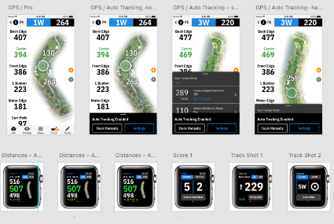
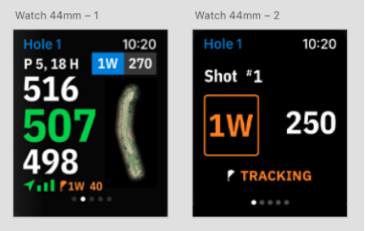
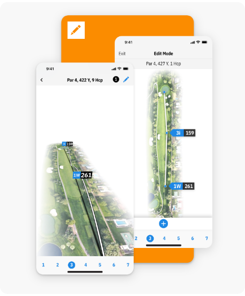
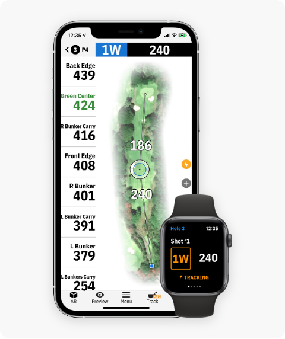
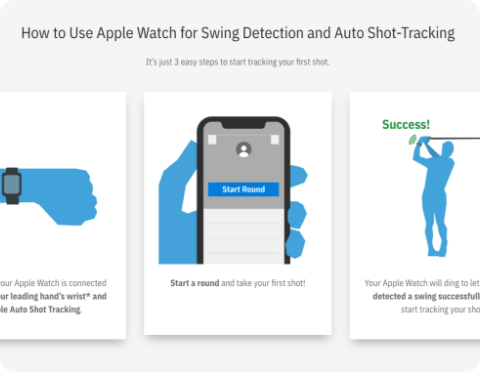
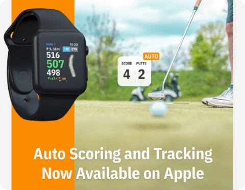

Automatic Shot Tracking
The Problem
While shot tracking was already a feature in the app, it required players to remember to take out their phone and log the start and end of each shot.
However, this was burdensome, and players often forgot. Without this accurate tracking, users would miss out on two of the app’s best features—club recommendation and personalized statistics—and potential long-term benefits.
The Solution
By pairing the phone app with a smartwatch, such as an Apple Watch, we could train the watch to detect a swing. Each swing detected now acted as the logged start and end of each shot.
Machine learning was used to train the smartwatch program to detect the movement and differentiate between a practice swing and a real shot.
The Result
The feature worked wonderfully, allowing players a hands-free experience. They could focus on their game, knowing that their distances and statistics were being tracked accurately.
With accurate tracking, there are more accurate game statistics and individualized recommendations that can lead to users improving their golf scores and gaining the full value in the product.
Overview
Role: UI/UX Lead, Intern Manager
I worked closely with a team of developers on a feature that used machine learning, GPS, and complex calculations to automatically detect and track a golfer’s shots. Behind the scenes, there was a significant amount of technical work—from training the system to recognize swings to ensuring GPS distances and shot locations were accurate.
My role was to translate all of that complexity into a highly readable user experience across Apple Watch and iPhone.
For the Apple Watch I designed the experience to provide golfers with only the information they needed while playing. For the iPhone I designed a new Shot Editor interface that allowed golfers to review and manually adjust their recorded shots. This feature had been in development for several years, and after a direct collaboration with a team at Apple we successfully brought it to market.
Part 1: Watch Screens
The watch experience needed to be extremely simple. Golfers would be using it while playing, so the interface needed to communicate that shot tracking was active without distracting from the game.
I integrated the new tracking functionality into the existing watch app, using a simple Tracking indicator at the bottom of the screen along with a live distance counter.
As the golfer walked or drove toward their ball, the distance would update in real time. This gave users immediate visual confirmation that the feature was working while keeping the rest of the interface familiar and uncluttered.

Using already existing infrastructure and flows, I designed small additions to the interface that would clearly show that auto shot tracking was actively working.

On the watch screen, we prioritized having a clear indicator that demonstrated the feature in action, showing yardage dynamically changing as the player moved.
Part 2: Phone Shot Editor
The Shot Editor was a completely new feature designed for the phone and required a new set of controls and interactions.
We already had a 3D fairway view that allowed golfers to see all of their recorded shots. I used this existing architecture as the foundation for the editor, creating a dedicated editing screen where users could review and manually adjust individual shots.


Part 3: User Testing and Feedback
We released a beta version of the new features to a dedicated group of users. Their feedback became an important part of both the development and design process. User testing helped the developers improve shot detection. While I used the feedback to refine the interface and interactions.
One thing users particularly appreciated was being able to see the tracking feature working in real time on their watch. The Tracking indicator and live distance counter gave them confidence that their shots were being recorded accurately.
Feedback on the phone experience also helped me refine the Shot Editor, making the manual editing controls more intuitive and easier to use.


Part 4: Instructions and Promotion
Because this was a brand-new feature, we needed to communicate not only how it worked, but also why golfers would want to use it. Alongside the product UI, I created step-by-step instructions to help users understand the new functionality and how to get the most out of it.
Fortunately, the feature was adopted quickly, and customer support began receiving strong feedback from users.
I also created promotional and marketing materials, including social media advertising. One of the biggest highlights of the project was collaborating directly with a team at Apple to showcase the feature during the 2021 Apple Event.

